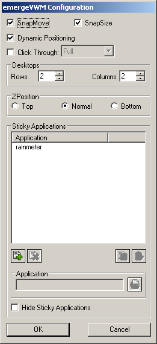

emergeVWM is the 'Virtual Window Manager' applet for Emerge Desktop. It displays an 'desktop grid' as defined in the configuration as well as mini window for each running task in a resizeable / movable window.
emergeVWM is configured by holding down the 'Ctrl' key and right clicking on the VWM window (by default appears as a grey square located on the top left corner of the screen showing a 2x2 grid). This will popup the config menu

The About option displays the module's author and version and the current scheme's path and filename.
Load Scheme allows the user to browse and select a Scheme File.
Edit Current Scheme calls the Emerge Desktop Scheme Editor with the current scheme loaded.
Reload Current Scheme allows to reload the current scheme without opening the Scheme Editor.
The Exit option closes the module. It can be restarted by running the executable file emergeVWM.exe.
The Configure option displays the emergeVWM Configuration dialog box

SnapMove toggles if the window should snap to the edge of other applets or the edges of the screen when moving.
SnapSize toggles if the window should snap to the edge of other applets or the edges of the screen when sizing.
Dynamic Positioning toggles if the window should automatically change it's position when the desktop resolution changes.
Click Through toggles if the user can click through the applets. If Click Through is activated, the user can choose between two modes: Full (the whole applet is "transparent" to mouse input) or Background (only the background area is "transparent" but the user can click on the icons in emergeTray, emergeTasks, emergeLauncher, the text in emergeCommand and the miniature windows in emergeVWM). Important notes: 1) Full Click Through works for any level of opacity, from opaque to fully transparent; 2) Background Click Through automatically sets the background to transparent but does not change the scheme, this is a known limitation; 3) To manipulate an applet set to Full Click Through the user must press the Shift key: Shift+Control+LeftClick to move the applet, Shift+Control+RightClick to get the Config menu and Shift+Alt to resize the applet.
The number of Virtual Desktops (or Windows) is defined by the number of Rows and Columns defined. The total number of virtual desktops is given by the number of rows times the number of columns (e.g. if the user sets both to 3, he will have 9 Virtual Desktops)
ZPosition defines the relative position of the window in the Z-axis i.e. from the screen to the user and can be set to Always on Top, Always on Bottom or Normal (behaves as a regular program window)
Sticky applications is a list of programs that are displayed in the active Virtual Desktop, i.e. if the user changes to another VW these programs will show in the same position on the Desktop currently selected. Simplifying it means that the program "follows" the user as he changes from one VW to another.
The list consists of the name of the executables, which can be selected by browsing to file's location or simply by typing the name of the executable (e.g. Calc for the Calculator)
The list items can be Added  by browsing
by browsing  to the executable to be added. The item is added to list when the Save
to the executable to be added. The item is added to list when the Save  button is pressed or discarded by pressing the Clear button. Items can be Deleted
button is pressed or discarded by pressing the Clear button. Items can be Deleted  from the list and are saved in the registry only after pressing OK. If at any time the user adds or deletes incorrectly any executable from the list, he can undo changes by pressing the Cancel button. This will close the Configure box without saving any modifications since the dialog was opened.
from the list and are saved in the registry only after pressing OK. If at any time the user adds or deletes incorrectly any executable from the list, he can undo changes by pressing the Cancel button. This will close the Configure box without saving any modifications since the dialog was opened.
emergeVWM settings are stored in HKEY_CURRENT_USER\Software\Emerge Desktop\emergeVWM and consist of the following subkeys:
- Settings - all emergeVWM related settings. Currently the options are:
- ClickThrough - True(1)/False(0) (Default False) Enables/disables the ability to click through the applets.
- DesktopColumns - The number of desktops going across (Default 2)
- DesktopRows - The number of desktops going down (Default 2)
- Height - The height of the window (Default 100)
- Scheme - Path and filename of the scheme used (Default none)
- SnapMove - snap to the edge of other applets and the side of the desktop when moving (Default 1)
- SnapSize - snap to the edge of other applets and the side of the desktop when sizing (Default 1)
- Width - The width of the window (Default 100)
- X - The position of the window on the x-axis (Default 0)
- Y - The position of the window on the y-axis (Default 0)
- ZPosition - The position of the window on the z-axis (window order - Default "normal")
- DynamicPositioning - Dynamic reposition emergeTray when the desktop resolution changes (Default 1)
- Sticky - stores a list strings containing the full or partial window titles of windows that are always to remain on the active desktop. The values are of type String the name is up to the user (the order is dependent on the name used) and the data is the name of the executable (with or without extension).
Left clicking on a 'desktop' will switch to the specific 'desktop'. Selecting a task from emergeTasks or via Alt-Tab will switch to the 'desktop' on which the task resides, restore with window (if minimized) and move the window to the foreground. Moving windows between 'desktops' is controlled by left clicking on a window in emergeVWM and dragging it to the desired 'desktop'.
Alternatively the user can set hotkeys or type (only in emergeCommand) to move from one VW to another. The Internal Commands available for this purpose are: VWMLeft, VWMRight, VWMUp and VWMDown. The user can also gather all currently running tasks into the active VW by executing the command VWMGather.
Left clicking on the edge of the window while holding down the 'Alt' key will allow for resizing the window. Simply drag the mouse, and the window will resize itself accordingly. The new size of the window is stored in the Width and Height settings in the registry, so it's new size will be remembered on the next start of emergeVWM.
Double left clicking on the main window will display the 'Display Properties' dialog.
Holding down 'Ctrl' while left clicking on the edge of the window will allow it to be dragged around the desktop. When the window nears the screen edge, it will snap to it, also, it will not allow itself to be dragged off screen. Similar to the resizing, the new position is stored in the X and Y settings in the registry so that they will be remembered on next start.